Dentist | AI in healthcare researcher | Tech and AI enthusiast
PROJECTS
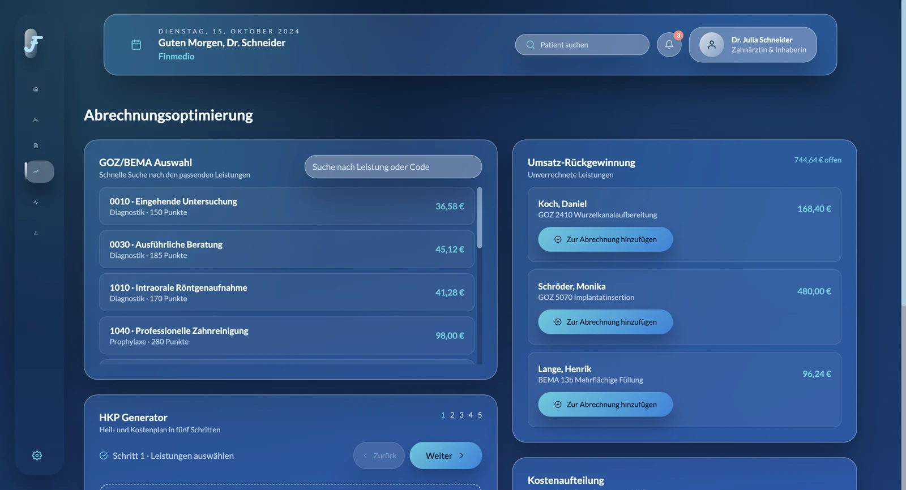
Finmedio
AI practice intelligence for automated billing and documentation. Winner of hackNations Venture Track and the Transatlantic AI Pitch Competition at Harvard.
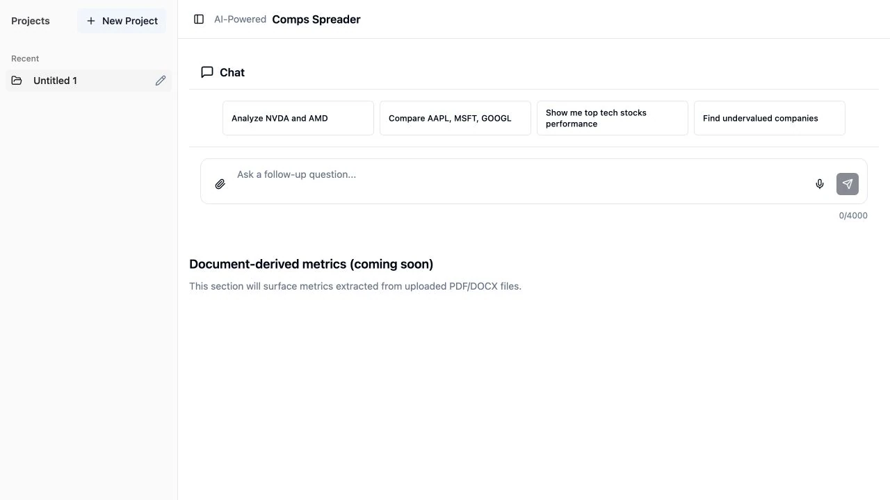
AlphaPilot
AI-powered company comparisons, financial document analysis and Excel exports. Winner of hackNations Global AI Hackathon.

Jaw Atlas
Interactive 3D facial anatomy for students, with selectable layers, structure information and practice quizzes. Explore in your browser or in VR.
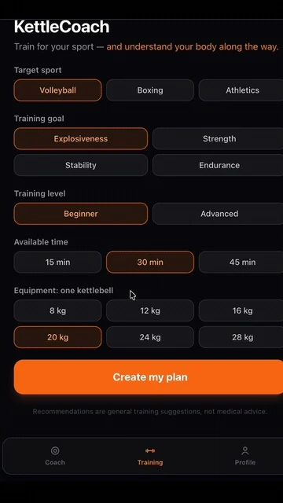

KettleCoach
A kettlebell coaching prototype with tailored training plans, 3D exercise anatomy, camera-based rep counting and voice feedback. Winner project at the Titanium Hackathon.
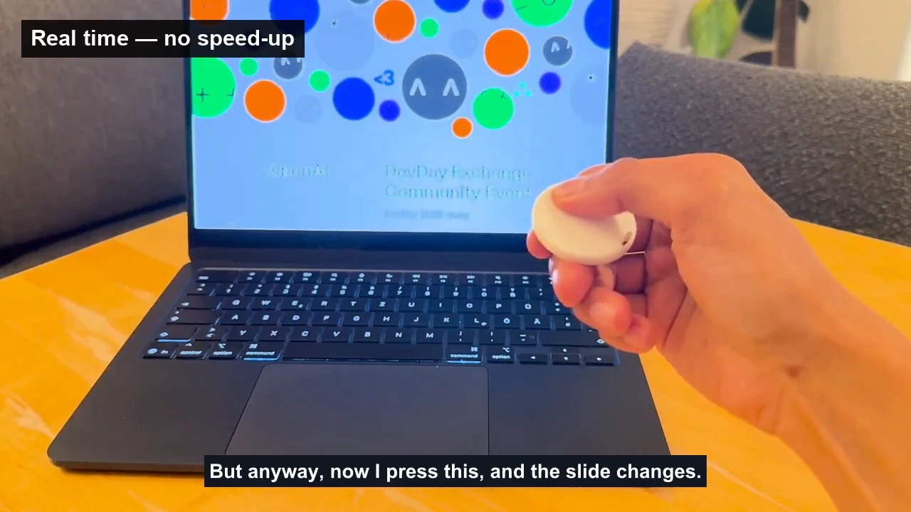
PowerPoint Clicker
Turning a Bluetooth tracker from a job fair into a PowerPoint clicker with a native macOS helper. Watch the demo on X.
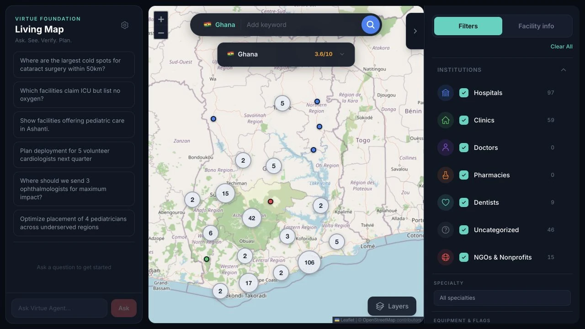
OpenCare
AI-powered platform mapping and analyzing global healthcare access

Anaesthesia
Streamlit-based web app identifying the right type of Articaine‑based anaesthesia by evaluating contraindications and calculating maximum dosage. (App can be woken up again if it has gone to sleep!)
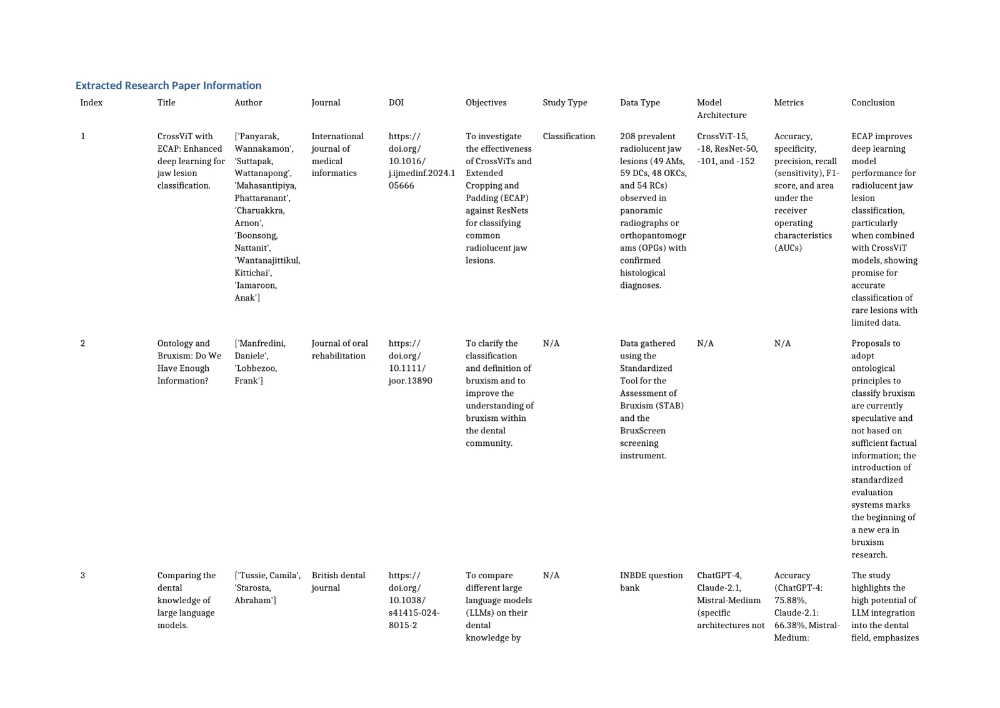
AI Research Article Parser
Automates retrieval and summarization of research abstracts in AI for dentistry.

Visual Travel Planner
Streamlit-based web app that lets users select attractions, view them on a map, and generate a text-based multi-day itinerary, which can be downloaded as a PDF.
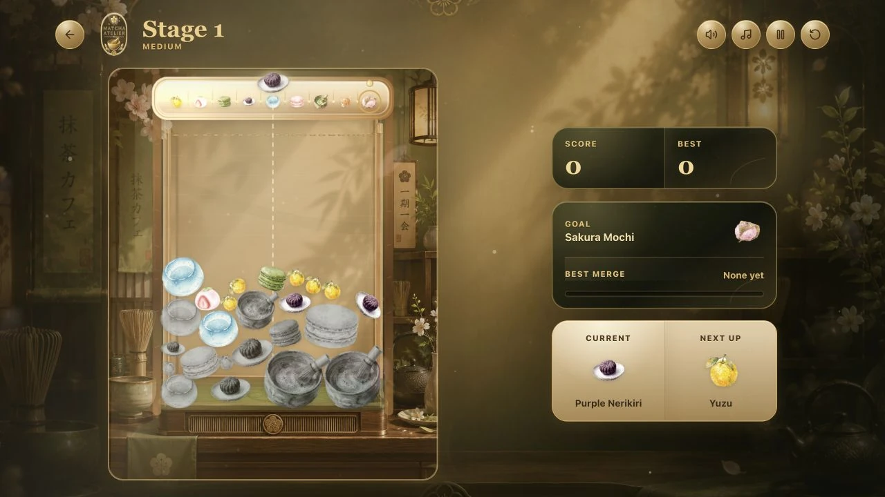
Matcha Atelier
A cozy indie game centered on matcha-making, soft visuals, and a playful atelier atmosphere.
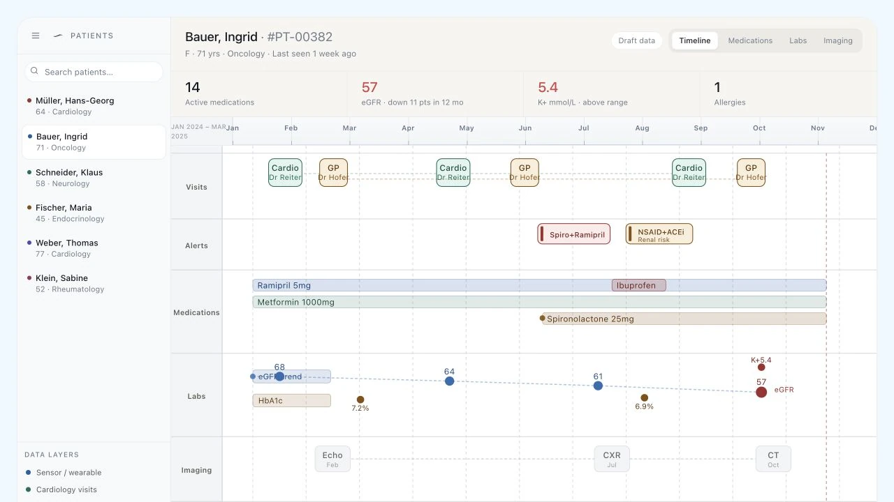
Impact Info
A medtech prototype bringing wearable data, clinical documents and AI-extracted findings into one patient timeline.
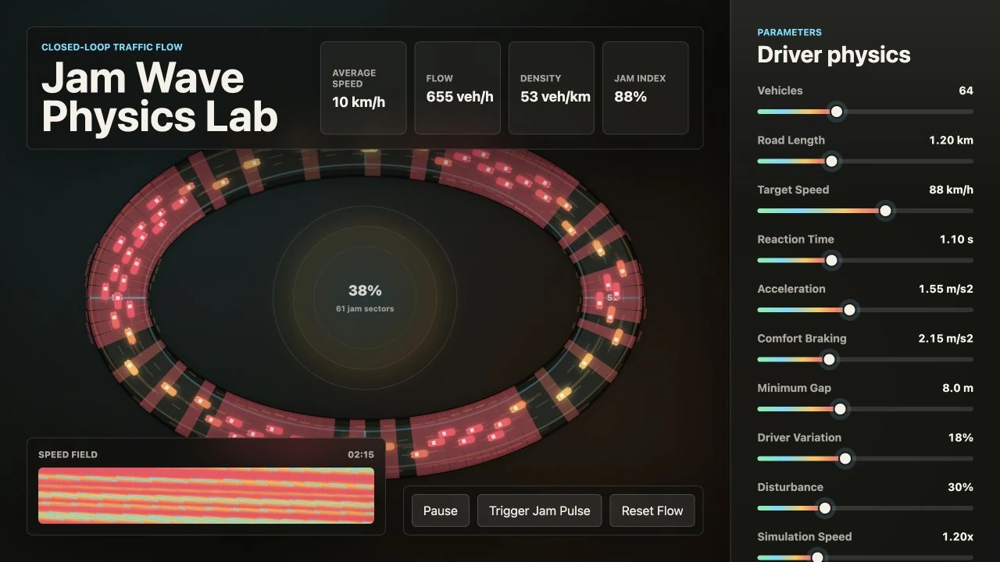
Traffic Jam Physics Lab
An interactive traffic simulation showing how driver behavior, density and small disturbances create phantom traffic jams.
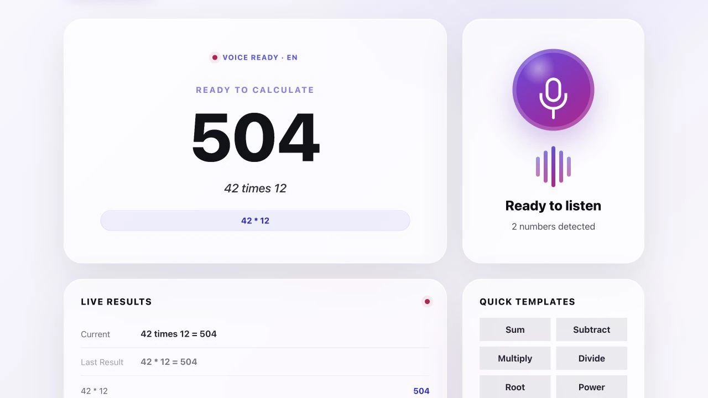
Speech Calc Pro
A voice-first calculator that turns spoken math into editable equations, with multilingual dictation and instant results.
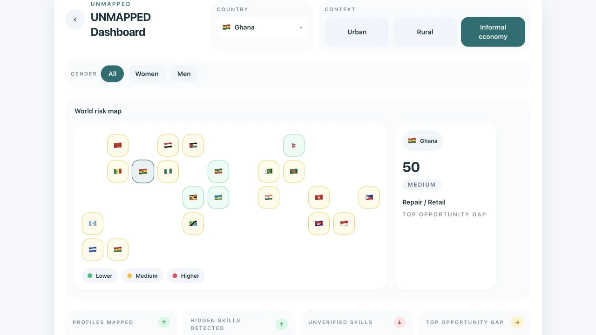
UNMAPPED
Turns informal work experience into a skills passport, connecting people with job opportunities and employers with overlooked talent.
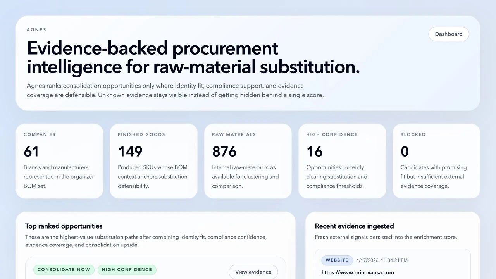
Agnes Procurement Intelligence
A procurement prototype comparing raw-material alternatives and supplier evidence, with OCR and source-backed recommendations.
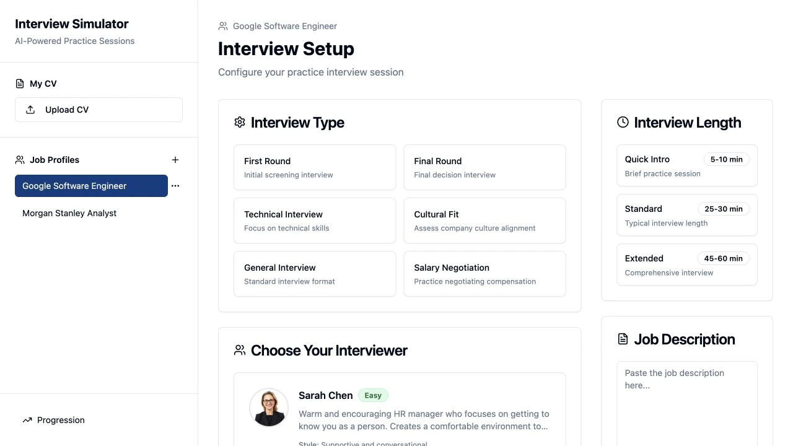
Interview Simulator
Practice job interviews with CV-based preparation, company and role profiles, interviewer personas and feedback.
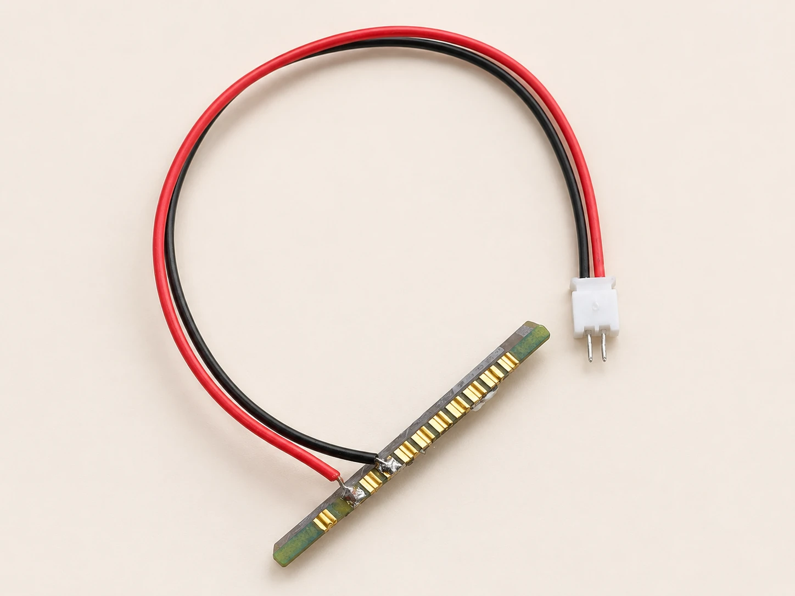
Stealth project
Worked on a sensor hardware-software solution over the course of 2 hackathons and a 3-month venture program. Secured first place out of 40 + teams in one of the hackathons.
RESEARCH AND WRITING
Publications on AI in healthcare
- The role of large language models in dental diagnosis, treatment planning, and prognosis
- Data sharing for responsible artificial intelligence in dentistry: a narrative review of legal frameworks and privacy-preserving techniques
- Diagnostic Test Accuracy of AI in Detecting Obstructive Sleep Apnea: A Systematic Review
- Core Outcomes Measures in Dental Computer Vision Studies (DentalCOMS)
- Federated vs Local vs Central Deep Learning of Tooth Segmentation on Panoramic Radiographs
- Emulating Clinical Diagnostic Reasoning for Jaw Cysts with Machine Learning
Presentations
- OpenAI DevDay updates, 13 Oct 2026 – Presentation at DevDay Exchange Community: Munich, Munich, Germany
- Vom Problem zum Prototyp: Software bauen ohne Programmierkenntnisse (mit Codex), 14 Sep 2026 – Masterclass at Brains on Silicon, Dresden, Germany
- Building with Codex: Your first hackathon prototype with GPT-6 Astra, Sep 2026 – Presentation at AI.WOMEN Hackathon, Hamburg, Germany (event: 12–13 Sep 2026)
- Benchmarking Dental AI: The case for global data collaboration, Mar 2026 - Distinguished speaker series at the HAIDENer satelite symposium Transforming Oral Health: Simulations, AI, and Beyond!, IADR General session San Diego, CA, USA
- My Journey Through the Venture Track, Feb 2026, Keynote at the 4th Hack-Nation Global AI Hackathon, Munich Hub
- Pitching & Storytelling: What Made My Project Stand Out,Feb 2026 - Hack-Nation Fireside Chat Series
- The Role of Humans in an AI-First World: Insights from the Next Generation of Leaders, Jan 2026 - Roundtable at the AI House Davos during the World Economic Forum
- Finmedio: AI - Practice Intelligence for automated documentation and billing for dental practices , Nov 2025 – Presentation at Harvard Kennedy School, 1st place winner of the transatlantic AI pitch competition
- Data sharing for responsible artificial intelligence in dentistry: Safeguarding data privacy, Nov 2025 – Poster at Harvard School of Dental Medicine, 2nd Global Symposium on AI in Dentistry
- The Impact of AI on Healthcare Policy and Regulation, Nov 2023 – Poster at Harvard School of Dental Medicine, Global Symposium on AI in Dentistry
- Microbial and Sialochemical Saliva Shifts with Tumor Irradiation, Sep 2023 – Oral presentation at CED-IADR Conference, Rhodes, Greece
- AI in Dentistry - A Brief Market Overview, Mar 2023 – Oral presentation at ITU-WHO TG-Dental Symposium, hosted at the MIT
Blog posts on AI
- The AI Doctor Will See You Now: Navigating the Path to AGI in Healthcare
- Ambiguities or the issues we face with AI in medicine
- Personal Ruminations on AI's Missing Variable Problem
- Text First, Evidence Later? Managing Quality and Trust in an Era of AI-Augmented Research
- The AI's Toolbox: From Soggy Toast to Optimal Solutions